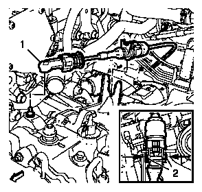
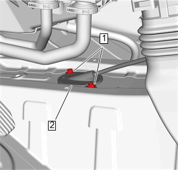
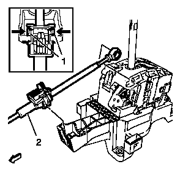
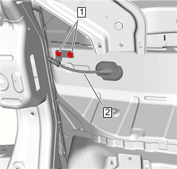

选档杆拉线的更换
拆卸程序
-

1.换挡杆拉线 (1)@换挡杆拉杆»拆下
- 2.从换挡杆拉线托架上拆下换挡杆拉线 (1) ，按压（箭头）卡箍(2) 以释放换档杆拉线。
- 3.前地板控制台»拆下–前地板控制台的更换
-

4.换档杆拉线盲孔螺母(1)»拆下[2x]
- 5.换档杆拉线(2)@车身»分离
-

6.拆下变速器控制装置前面的换档杆拉线 (2)。按压（箭头）2个卡箍 (1) 以释放换档杆拉线。
- 7.使用合适的工具将换档杆拉线从变速器控制装置的球节上拆下。
-

8.换档杆拉线固定螺母 (1)»拆下[2x]
- 9.变速器换档杆拉线 (2)»拆下
安装程序
-
1.变速器换档杆拉线 (2)»安装
-
2.换档杆拉线固定螺母 (1)»安装并紧固[2x]9 N•m(80 lb in)
-
3.换档杆拉线@变速器控制装置的球节»安装
- 4.将换档杆拉线(2) 固定在变速器控制装置前面。将换档杆拉线压入托架。
-
5.换档杆拉线(2)@车身»安装
- 6.换档杆拉线盲孔螺母(1)»安装并紧固[2x]9 N•m(80 lb in)
- 7.安装前地板控制台»安装–前地板控制台的更换
-
8.变速器换档杆拉线 (1)@拉线托架»安装
- 9.变速器换档杆拉线 (1)@拉杆»安装
- 10.调整自动变速器换档杆拉线。选档杆拉线的调整